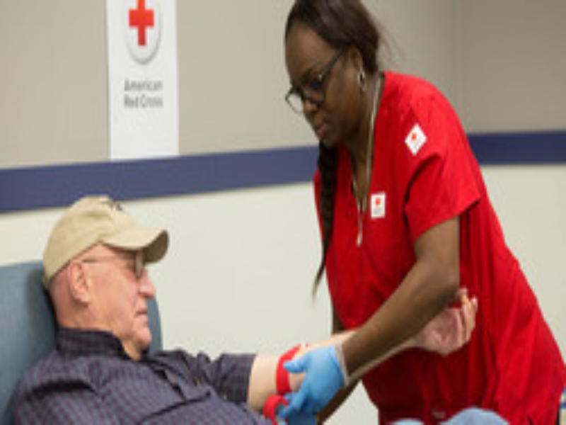
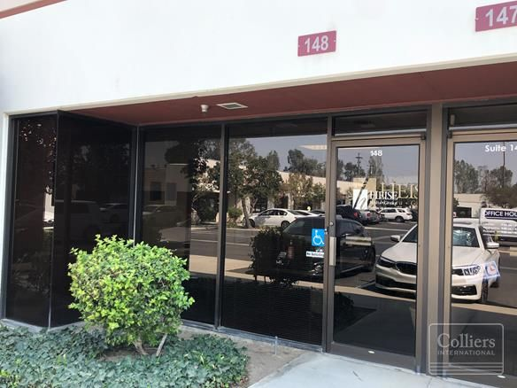
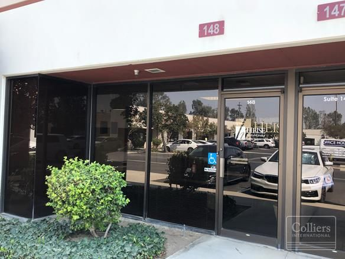
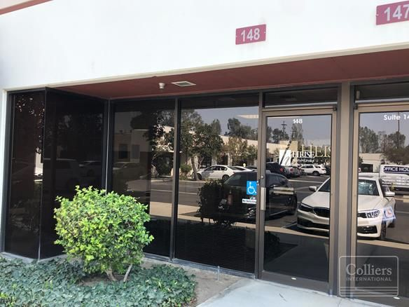

Mayank Patel
As a highly motivated and analytical first-year Political Science major at UC Riverside, you're embarking on a journey towards a career in law with a focus on corporate settings. Your pursuit of a pre-law track signals not just ambition, but a clear vision for your future. With strong research, analysis, and communication skills already in your arsenal, honed through both academic studies and diverse experiences in hospitality management and community service, you're laying a solid foundation for success in the legal field. Your academic path in Political Science provides a crucial framework for understanding the intricacies of governance, policy-making, and the legal system. Through courses in constitutional law, political theory, and international relations, you're gaining insights into the principles that underpin our legal and political institutions. These insights will undoubtedly serve you well as you progress towards your goal of becoming a lawyer. Your experiences in hospitality management offer a unique perspective that will set you apart in the legal realm. In a field where interpersonal skills and attention to detail are paramount, your time in hospitality has equipped you with invaluable abilities. Whether it's managing a team, resolving conflicts, or ensuring customer satisfaction, you've demonstrated your capacity to thrive in fast-paced and dynamic environments. These skills will be indispensable as you navigate the complexities of corporate law, where effective communication and relationship-building are essential. Moreover, your involvement in community service reflects a commitment to making a positive impact beyond the confines of the classroom. Engaging with diverse communities, addressing their needs, and advocating for change demonstrate your empathy and sense of social responsibility. These qualities are not only admirable but also fundamental to the practice of law, where attorneys often serve as advocates for justice and equality. As you look ahead to your future career, envision yourself playing a pivotal role in corporate settings, where your expertise in drafting and writing legally enforceable agreements will be in high demand. Your experience in the hospitality industry has familiarized you with the intricacies of contractual agreements, from vendor contracts to business leases. Building on this foundation, you'll have the opportunity to specialize in corporate law, advising clients on a wide range of legal matters, from mergers and acquisitions to intellectual property rights. In your role as a lawyer, you'll be tasked with safeguarding the interests of your clients while ensuring compliance with the law. This requires not only a deep understanding of legal principles but also the ability to think critically, analyze complex issues, and craft persuasive arguments. Fortunately, these are skills that you're already cultivating through your academic studies and extracurricular activities. As you progress through your undergraduate education and eventually pursue a law degree, remember to stay focused on your goals and continue to seek out opportunities for growth and development. With your determination, intellect, and passion for the law, there's no doubt that you'll achieve great success in your chosen field.
Experience
Hotel Rate Manager
•Hotel Rate Manager (Multiple Properties) | Central & Southern California | August 2021 - July 2023
- Developed and implemented dynamic pricing strategies across multiple hotels, optimizing revenue and occupancy rates.
- Conducted thorough market research and analysis to identify trends and inform pricing decisions.
- Resolved customer inquiries and concerns in a professional and timely manner, ensuring guest satisfaction.
- Maintained accurate property records and prepared reports for upper management.
- Demonstrated strong analytical, problem-solving, and communication skills while managing diverse employees and settings
American Red Cross Volunteer
• Assisted in organizing and participating in community blood drives, raising awareness, and encouraging blood donation.
Provided disaster relief support by packaging and distributing essential supplies to affected communities.
Collaborated effectively with team members to achieve common goals and deliver impactful service.
Honed teamwork, communication, and problem-solving skills while contributing to a worthy cause.
NHS Volunteer
•Volunteered at events to support communities in need throughout high school career. Events included, volunteering at local homeless shelters,and hospices, as well as various community drives to support a certain cause or goal to help our community.
Education
UC Riverside
Portfolio

_office_furniture.png)
 

